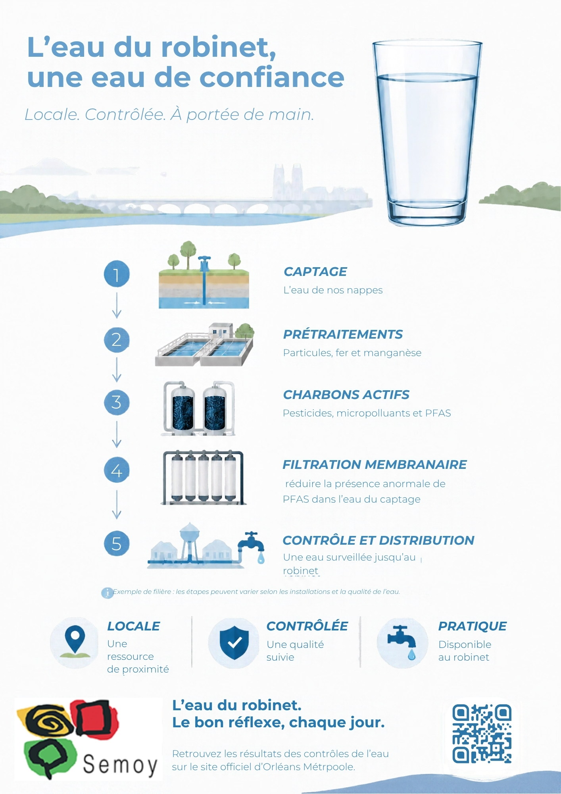
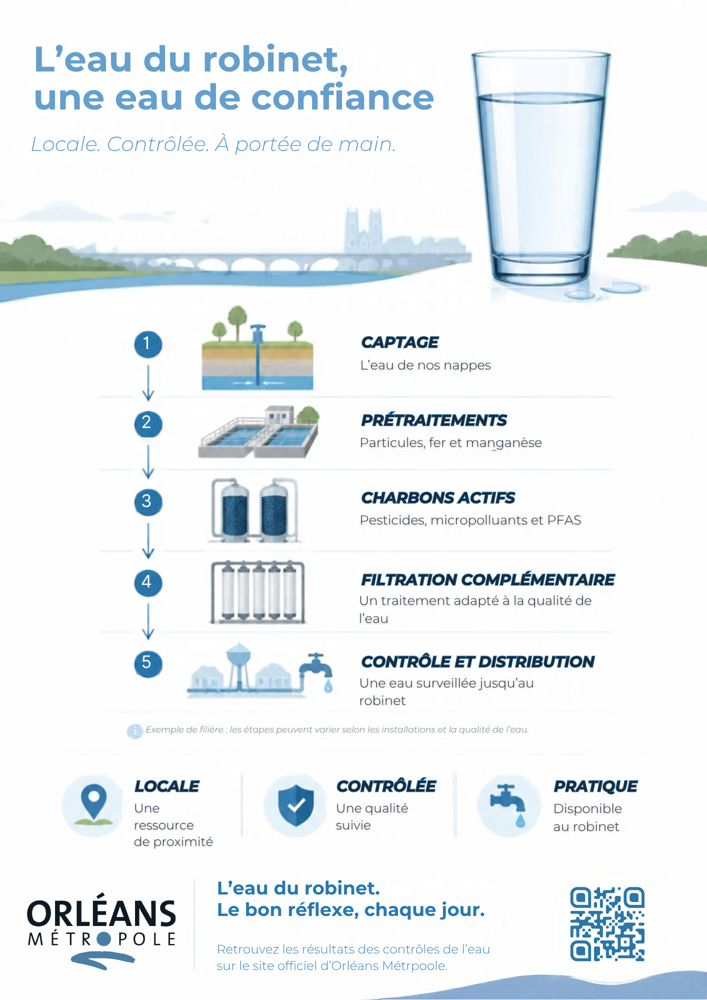

En bref
Un captage à l’arrêt
Le captage des Hautes Bordes, à Semoy, est arrêté depuis le 26 décembre 2023.
Une eau qui vient d’Orléans
Depuis cet arrêt, la commune est alimentée par les captages qui desservent Orléans.
Une étude, pas une décision
La remise en service du captage est étudiée. Rien n’est décidé à ce jour.
Que s’est-il passé ?
Entre novembre 2023 et janvier 2024, quatre analyses de l’eau du captage ont dépassé la limite de qualité fixée pour les PFAS. Le captage a été arrêté et la commune raccordée aux ressources d’Orléans.
La contamination d’un captage ne signifie pas que toute l’eau distribuée dans la Métropole est non conforme.
Les PFAS, c’est quoi ?
Les PFAS sont des substances chimiques persistantes : elles se dégradent très lentement. Elles sont surveillées dans l’environnement et dans l’eau potable.
Pour l’eau du robinet, la réglementation fixe une limite de 100 nanogrammes par litre pour la somme de 20 PFAS.
Mon eau est-elle contrôlée ?
Oui. L’eau distribuée fait l’objet de traitements adaptés et de contrôles de qualité. Les autorités sanitaires assurent le contrôle réglementaire.
Où trouver les résultats de ma commune
- Le bulletin de qualité de l’eau publié par l’Agence régionale de santé (ARS).
- Les informations du service d’eau sur orleans-metropole.fr.
- L’article d’Orléans Métropole sur la situation à Semoy.
Si une restriction d’usage est annoncée, suivez les consignes officielles.
Où en est l’étude ?
- Refaire des analysesConnaître la qualité actuelle de l’eau du captage.
- Tester deux filtresComparer le charbon actif et des résines sur l’eau de Semoy.
- Comparer les coûtsMettre le traitement en regard de la solution actuelle.
- DéciderLa Métropole choisit de maintenir la situation ou de réhabiliter le captage.
Pendant toute l’étude, et pendant d’éventuels travaux, l’alimentation depuis Orléans est maintenue.
Comment retire-t-on les PFAS de l’eau ?
Retenir
Le charbon actif et les résines piègent les PFAS dans un filtre, qu’il faut ensuite remplacer et traiter.
Séparer
Les membranes séparent l’eau traitée d’un concentré qui contient les polluants.
Détruire
Des procédés spécialisés pourraient détruire ce concentré, sous réserve de validation.
Pourquoi choisir l’eau du robinet ?
- Pratique. Disponible chez soi, sans packs de bouteilles à transporter.
- Moins d’emballages. Une carafe ou une gourde réutilisable limite les bouteilles à usage unique.
- Économique au quotidien. Le prix dépend du territoire et de la consommation : il figure sur votre facture.
- Un choix en confiance. La surveillance et l’information des usagers sont essentielles.
Les bons réflexes au quotidien
- Utilisez une carafe propre et conservez-la au réfrigérateur.
- Nettoyez régulièrement gourdes et contenants.
- En cas de doute sur la qualité de l’eau, consultez les informations locales.